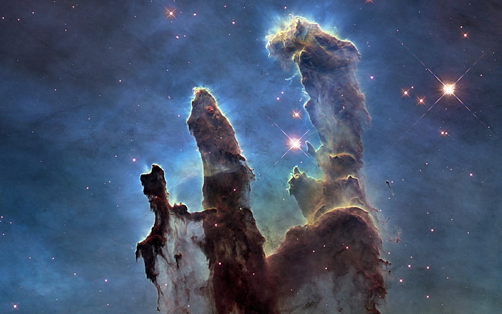

Webb Telescope Captures New View of ‘Pillars of Creation’
The NASA space observatory’s infrared eye finds out what’s going on within the cloudy cosmic nursery.
Author
Yes, it’s full of stars, and stars to be. Twenty-seven years ago, in 1995, the Hubble Space Telescope wowed the world with a cosmic landscape called Pillars of Creation. The image revealed towering mountains of gas and dust in the Eagle Nebula, one of the most productive star factories in the Milky Way galaxy. It was high art from deep space and a visual triumph for the newly repaired and reborn Hubble, which had been marred by a blurred lens that prevented it from recording clearer scenes of the cosmos. Now the James Webb Space Telescope, Hubble’s successor, has turned its infrared eyes to see through those same columns and inspect the newborns still in their dusty cribs. In the new view of the Pillars released on Wednesday, cherry-red streaks and waves are jets of material squeezed from globs of gas and dust — baby protostars — as they collapsed and heated up toward stardom. After 20 years and some $10 billion the Webb telescope launched on Christmas Day last year into an orbit around the sun and a million miles from Earth. The launch was stupendously successful, as was the complex unfolding procedure in space that put the telescope into operational mode. The Webb is designed to see infrared light, electromagnetic radiation with wavelengths longer than visible light — colors no human eye has ever seen. Viewing the cosmos in these wavelengths allows astronomers to see distant galaxies whose light has shifted into infrared with their motion away from Earth, and to peer though dust clouds that litter the lanes of interstellar space.